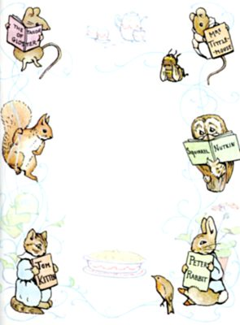

Author of "The Tale of Peter Rabbit," etc
| "I'LL BE AT CHARGES FOR A LOOKING-GLASS, |
| AND ENTERTAIN A SCORE OR TWO OF TAILORS" |
| Richard III |
NEW YORK
FREDERICK WARNE & CO, INC
COPYRIGHT, 1903
BY
FREDERICK WARNE & Co.
COPYRIGHT RENEWED, 1931
[All rights reserved]
PRINTED IN THE U.S.A. BY PRINCETON POLYCHROME PRESS
ISBN O 7232 0594 9 (cloth) ISBN O-7232-6227-6 (paper)
12 13 14 15 16 17 18 19 20(C)
MY DEAR FREDA,
Because you are fond of fairy-tales, and have been ill, I have made you a story all for yourself—a new one that nobody has read before.
And the queerest thing about it is—that I heard it in Gloucestershire, and that it is true—at least about the tailor, the waistcoat, and the
"No more twist!"
Christmas, 1901

In the time of swords and periwigs and full-skirted coats with flowered lappets—when gentlemen wore ruffles, and gold-laced waistcoats of paduasoy and taffeta—there lived a tailor in Gloucester.
He sat in the window of a little shop in Westgate Street, cross-legged on a table, from morning till dark.
All day long while the light lasted he sewed and snippeted, piecing out his satin and pompadour, and lutestring; stuffs had strange names, and were very expensive in the days of the Tailor of Gloucester.
But although he sewed fine silk for his neighbours, he himself was very, very poor—a little old man in spectacles, with a pinched face, old crooked fingers, and a suit of thread-bare clothes.

He cut his coats without waste, according to his embroidered cloth; they were very small ends and snippets that lay about upon the table—"Too narrow breadths for nought—except waistcoats for mice," said the tailor.
One bitter cold day near Christmastime the tailor began to make a coat—a coat of cherry-coloured corded silk embroidered with pansies and roses, and a cream coloured satin waistcoat—trimmed with gauze and green worsted chenille—for the Mayor of Gloucester.
The tailor worked and worked, and he talked to himself. He measured the silk, and turned it round and round, and trimmed it into shape with his shears; the table was all littered with cherry-coloured snippets.
"No breadth at all, and cut on the cross; it is no breadth at all; tippets for mice and ribbons for mobs! for mice!" said the Tailor of Gloucester.
When the snow-flakes came down against the small leaded window-panes and shut out the light, the tailor had done his day's work; all the silk and satin lay cut out upon the table.

There were twelve pieces for the coat and four pieces for the waistcoat; and there were pocket flaps and cuffs, and buttons all in order. For the lining of the coat there was fine yellow taffeta; and for the button-holes of the waistcoat, there was cherry-coloured twist. And everything was ready to sew together in the morning, all measured and sufficient—except that there was wanting just one single skein of cherry-coloured twisted silk.
The tailor came out of his shop at dark, for he did not sleep there at nights; he fastened the window and locked the door, and took away the key. No one lived there at night but little brown mice, and they run in and out without any keys!
For behind the wooden wainscots of all the old houses in Gloucester, there are little mouse staircases and secret trap-doors; and the mice run from house to house through those long narrow passages; they can run all over the town without going into the streets.
But the tailor came out of his shop, and shuffled home through the snow. He lived quite near by in College Court, next the doorway to College Green; and although it was not a big house, the tailor was so poor he only rented the kitchen.
He lived alone with his cat; it was called Simpkin.
Now all day long while the tailor was out at work, Simpkin kept house by himself; and he also was fond of the mice, though he gave them no satin for coats!
"Miaw?" said the cat when the tailor opened the door. "Miaw?"
The tailor replied—"Simpkin, we shall make our fortune, but I am worn to a ravelling. Take this groat (which is our last fourpence) and Simpkin, take a china pipkin; buy a penn'orth of bread, a penn'orth of milk and a penn'orth of sausages. And oh, Simpkin, with the last penny of our fourpence buy me one penn'orth of cherry-coloured silk. But do not lose the last penny of the fourpence, Simpkin, or I am undone and worn to a thread-paper, for I have NO MORE TWIST."
Then Simpkin again said, "Miaw?" and took the groat and the pipkin, and went out into the dark.
The tailor was very tired and beginning to be ill. He sat down by the hearth and talked to himself about that wonderful coat.
"I shall make my fortune—to be cut bias—the Mayor of Gloucester is to be married on Christmas Day in the morning, and he hath ordered a coat and an embroidered waistcoat—to be lined with yellow taffeta—and the taffeta sufficeth; there is no more left over in snippets than will serve to make tippets for mice——"
Then the tailor started; for suddenly, interrupting him, from the dresser at the other side of the kitchen came a number of little noises—
Tip tap, tip tap, tip tap tip!
"Now what can that be?" said the Tailor of Gloucester, jumping up from his chair. The dresser was covered with crockery and pipkins, willow pattern plates, and tea-cups and mugs.

The tailor crossed the kitchen, and stood quite still beside the dresser, listening, and peering through his spectacles. Again from under a tea-cup, came those funny little noises—
Tip tap, tip tap, Tip tap tip!
"This is very peculiar," said the Tailor of Gloucester; and he lifted up the tea-cup which was upside down.
Out stepped a little live lady mouse, and made a curtsey to the tailor! Then she hopped away down off the dresser, and under the wainscot.
The tailor sat down again by the fire, warming his poor cold hands, and mumbling to himself——
"The waistcoat is cut out from peach-coloured satin—tambour stitch and rose-buds in beautiful floss silk. Was I wise to entrust my last fourpence to Simpkin? One-and-twenty button-holes of cherry-coloured twist!"
But all at once, from the dresser, there came other little noises:
Tip tap, tip tap, tip tap tip!
"This is passing extraordinary!" said the Tailor of Gloucester, and turned over another tea-cup, which was upside down.
Out stepped a little gentleman mouse, and made a bow to the tailor!
And then from all over the dresser came a chorus of little tappings, all sounding together, and answering one another, like watch-beetles in an old worm-eaten window-shutter—
Tip tap, tip tap, tip tap tip!
And out from under tea-cups and from under bowls and basins, stepped other and more little mice who hopped away down off the dresser and under the wainscot.

The tailor sat down, close over the fire, lamenting—"One-and-twenty button-holes of cherry-coloured silk! To be finished by noon of Saturday: and this is Tuesday evening. Was it right to let loose those mice, undoubtedly the property of Simpkin? Alack, I am undone, for I have no more twist!"
The little mice came out again, and listened to the tailor; they took notice of the pattern of that wonderful coat. They whispered to one another about the taffeta lining, and about little mouse tippets.
And then all at once they all ran away together down the passage behind the wainscot, squeaking and calling to one another, as they ran from house to house; and not one mouse was left in the tailor's kitchen when Simpkin came back with the pipkin of milk!

Simpkin opened the door and bounced in, with an angry "G-r-r-miaw!" like a cat that is vexed: for he hated the snow, and there was snow in his ears, and snow in his collar at the back of his neck. He put down the loaf and the sausages upon the dresser, and sniffed.
"Simpkin," said the tailor, "where is my twist?"
But Simpkin set down the pipkin of milk upon the dresser, and looked suspiciously at the tea-cups. He wanted his supper of little fat mouse!
"Simpkin," said the tailor, "where is my TWIST?"

But Simpkin hid a little parcel privately in the tea-pot, and spit and growled at the tailor; and if Simpkin had been able to talk, he would have asked: "Where is my MOUSE?"
"Alack, I am undone!" said the Tailor of Gloucester, and went sadly to bed.
All that night long Simpkin hunted and searched through the kitchen, peeping into cupboards and under the wainscot, and into the tea-pot where he had hidden that twist; but still he found never a mouse!
Whenever the tailor muttered and talked in his sleep, Simpkin said "Miaw-ger-r-w-s-s-ch!" and made strange horrid noises, as cats do at night.
For the poor old tailor was very ill with a fever, tossing and turning in his four-post bed; and still in his dreams he mumbled—"No more twist! no more twist!"
All that day he was ill, and the next day, and the next; and what should become of the cherry-coloured coat? In the tailor's shop in Westgate Street the embroidered silk and satin lay cut out upon the table—one-and-twenty button-holes—and who should come to sew them, when the window was barred, and the door was fast locked?
But that does not hinder the little brown mice; they run in and out without any keys through all the old houses in Gloucester!

Out of doors the market folks went trudging through the snow to buy their geese and turkeys, and to bake their Christmas pies; but there would be no Christmas dinner for Simpkin and the poor old Tailor of Gloucester.
The tailor lay ill for three days and nights; and then it was Christmas Eve, and very late at night. The moon climbed up over the roofs and chimneys, and looked down over the gateway into College Court. There were no lights in the windows, nor any sound in the houses; all the city of Gloucester was fast asleep under the snow.
And still Simpkin wanted his mice, and he mewed as he stood beside the four-post bed.
But it is in the old story that all the beasts can talk, in the night between Christmas Eve and Christmas Day in the morning (though there are very few folk that can hear them, or know what it is that they say).
When the Cathedral clock struck twelve there was an answer—like an echo of the chimes—and Simpkin heard it, and came out of the tailor's door, and wandered about in the snow.
From all the roofs and gables and old wooden houses in Gloucester came a thousand merry voices singing the old Christmas rhymes—all the old songs that ever I heard of, and some that I don't know, like Whittington's bells.

First and loudest the cocks cried out: "Dame, get up, and bake your pies!"
"Oh, dilly, dilly, dilly!" sighed Simpkin.
And now in a garret there were lights and sounds of dancing, and cats came from over the way.
"Hey, diddle, diddle, the cat and the fiddle! All the cats in Gloucester—except me," said Simpkin.
Under the wooden eaves the starlings and sparrows sang of Christmas pies; the jack-daws woke up in the Cathedral tower; and although it was the middle of the night the throstles and robins sang; the air was quite full of little twittering tunes.

But it was all rather provoking to poor hungry Simpkin!
Particularly he was vexed with some little shrill voices from behind a wooden lattice. I think that they were bats, because they always have very small voices—especially in a black frost, when they talk in their sleep, like the Tailor of Gloucester.
They said something mysterious that sounded like—
"Buz, quoth the blue fly, hum, quoth the bee,
Buz and hum they cry, and so do we!"
and Simpkin went away shaking his ears as if he had a bee in his bonnet.
From the tailor's shop in Westgate came a glow of light; and when Simpkin crept up to peep in at the window it was full of candles. There was a snippeting of scissors, and snappeting of thread; and little mouse voices sang loudly and gaily—
"Four-and-twenty tailors
Went to catch a snail,
The best man amongst them
Durst not touch her tail,
She put out her horns
Like a little kyloe cow,
Run, tailors, run! or she'll have you all e'en now!"
Then without a pause the little mouse voices went on again—
"Sieve my lady's oatmeal,
Grind my lady's flour,
Put it in a chestnut,
Let it stand an hour——"

"Mew! Mew!" interrupted Simpkin, and he scratched at the door. But the key was under the tailor's pillow, he could not get in.
The little mice only laughed, and tried another tune—
"Three little mice sat down to spin,
Pussy passed by and she peeped in.
What are you at, my fine little men?
Making coats for gentlemen.
Shall I come in and cut off your threads?
Oh, no, Miss Pussy, you'd bite off our heads!"
"Mew! Mew!" cried Simpkin. "Hey diddle dinketty?" answered the little mice—
"Hey diddle dinketty, poppetty pet!
The merchants of London they wear scarlet;
Silk in the collar, and gold in the hem,
So merrily march the merchantmen!"

They clicked their thimbles to mark the time, but none of the songs pleased Simpkin; he sniffed and mewed at the door of the shop.
"And then I bought
A pipkin and a popkin,
A slipkin and a slopkin,
All for one farthing——
and upon the kitchen dresser!" added the rude little mice.
"Mew! scratch! scratch!" scuffled Simpkin on the window-sill; while the little mice inside sprang to their feet, and all began to shout at once in little twittering voices: "No more twist! No more twist!" And they barred up the window shutters and shut out Simpkin.
But still through the nicks in the shutters he could hear the click of thimbles, and little mouse voices singing—
"No more twist! No more twist!"

Simpkin came away from the shop and went home, considering in his mind. He found the poor old tailor without fever, sleeping peacefully.
Then Simpkin went on tip-toe and took a little parcel of silk out of the tea-pot, and looked at it in the moonlight; and he felt quite ashamed of his badness compared with those good little mice!
When the tailor awoke in the morning, the first thing which he saw upon the patchwork quilt, was a skein of cherry-coloured twisted silk, and beside his bed stood the repentant Simpkin!
"Alack, I am worn to a ravelling," said the Tailor of Gloucester, "but I have my twist!"
The sun was shining on the snow when the tailor got up and dressed, and came out into the street with Simpkin running before him.
The starlings whistled on the chimney stacks, and the throstles and robins sang—but they sang their own little noises, not the words they had sung in the night.
"Alack," said the tailor, "I have my twist; but no more strength—nor time—than will serve to make me one single button-hole; for this is Christmas Day in the Morning! The Mayor of Gloucester shall be married by noon—and where is his cherry-coloured coat?"
He unlocked the door of the little shop in Westgate Street, and Simpkin ran in, like a cat that expects something.
But there was no one there! Not even one little brown mouse!
The boards were swept clean; the little ends of thread and the little silk snippets were all tidied away, and gone from off the floor.

But upon the table—oh joy! the tailor gave a shout—there, where he had left plain cuttings of silk—there lay the most beautifullest coat and embroidered satin waistcoat that ever were worn by a Mayor of Gloucester.
There were roses and pansies upon the facings of the coat; and the waistcoat was worked with poppies and corn-flowers.
Everything was finished except just one single cherry-coloured button-hole, and where that button-hole was wanting there was pinned a scrap of paper with these words—in little teeny weeny writing—
NO MORE TWIST
And from then began the luck of the Tailor of Gloucester; he grew quite stout, and he grew quite rich.

He made the most wonderful waistcoats for all the rich merchants of Gloucester, and for all the fine gentlemen of the country round.
Never were seen such ruffles, or such embroidered cuffs and lappets! But his button-holes were the greatest triumph of it all.
The stitches of those button-holes were so neat—so neat—I wonder how they could be stitched by an old man in spectacles, with crooked old fingers, and a tailor's thimble.
The stitches of those button-holes were so small—so small—they looked as if they had been made by little mice!
